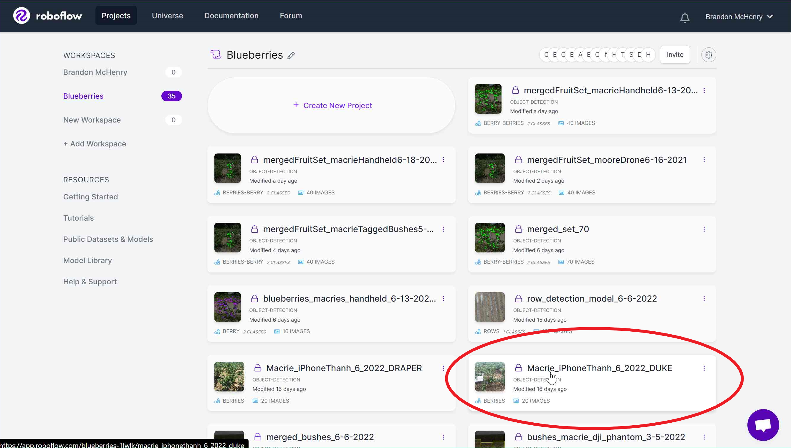
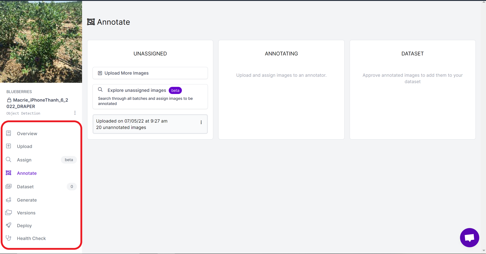
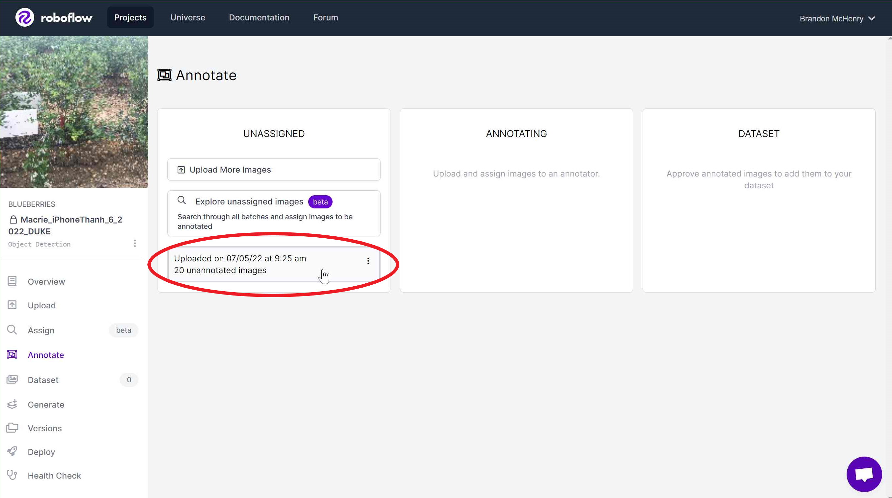
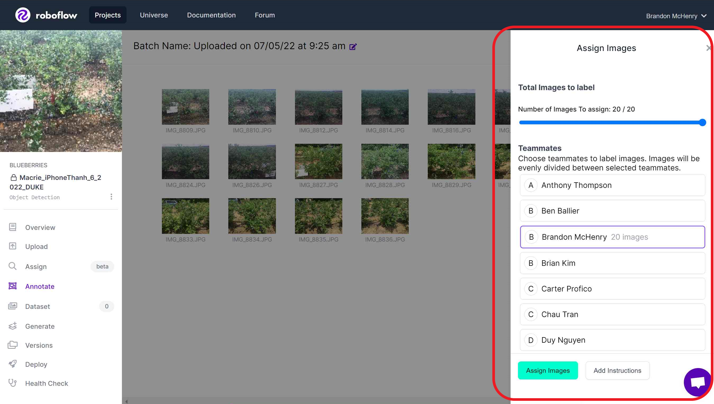
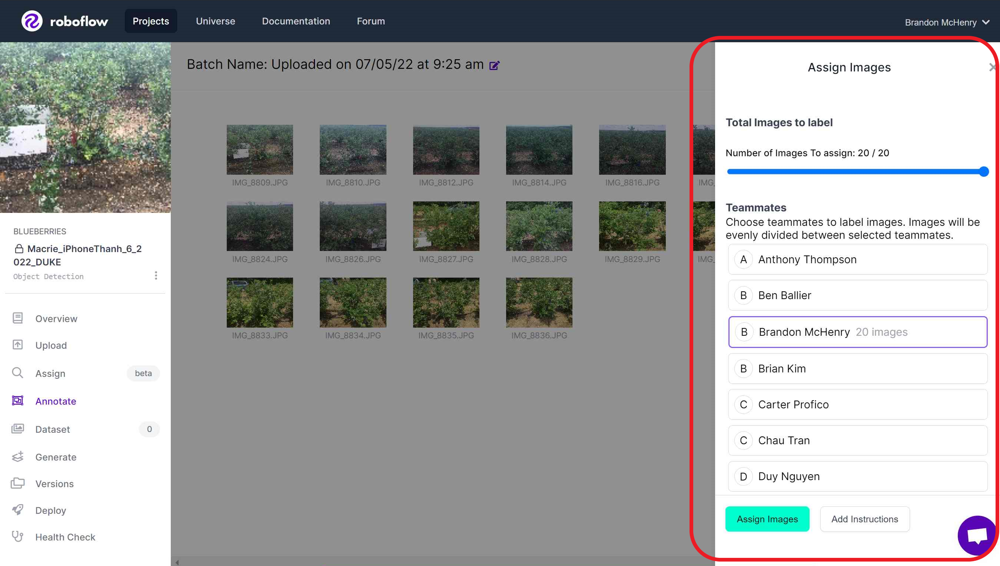

Getting Started with Roboflow
Contents
Getting Started with Roboflow#
This guide should help new prospective students get started with Roboflow and should transition into the next section, which details the annotation process.
Creating an Account#
Getting started with Roboflow is fairly simple. You will have to create an account, preferably with your school email address. Not much to detail here.
(Usually Professor H. Nguyen will help facilitate this process by adding you to the correct group)
The Roboflow Home Page#

In the home page, you should be defaulted to a workspace that you belong to. If you do not see a Blueberries workspace on the left-hand side, then please talk to Professor H. Nguyen to be added to our group. Open the Blueberries workspace and you will be greeted with a home page that looks like the attached photo.
Projects#
So in the home page of the Blueberries workspace, we have the option of making a new project or viewing existing projects.
You should create a new project when: You have pictures that require annotating. Simply upload your photos to the dataset (preferably each photo having a unique name that can be referenced (Ex: DSC_2237, etc.). The default name for pictures from phones/cameras generally has a good enough name. (But you can always do it in your own style). And for the name for the dataset itself, generally a good idea is to label what the whole sample of data represents (so in our case, specific sets of bushes that we have labelled), and the date that the data was collected. Once you have these, simply upload them to Roboflow and create a dataset.
 Click into your newly created project.
 From here you can you assign people on the team to start annotating the images. There are multiple tabs along the left-hand side of the screen, but the most important will likely be the Annotate, Dataset, Generate, and Versions tabs.
The first thing you will want to do is assign the dataset to someone for annotation. Follow the steps shown in the picture to assign the photos to someone.

 

Once you have the images assigned to someone, you can finally begin annotating!